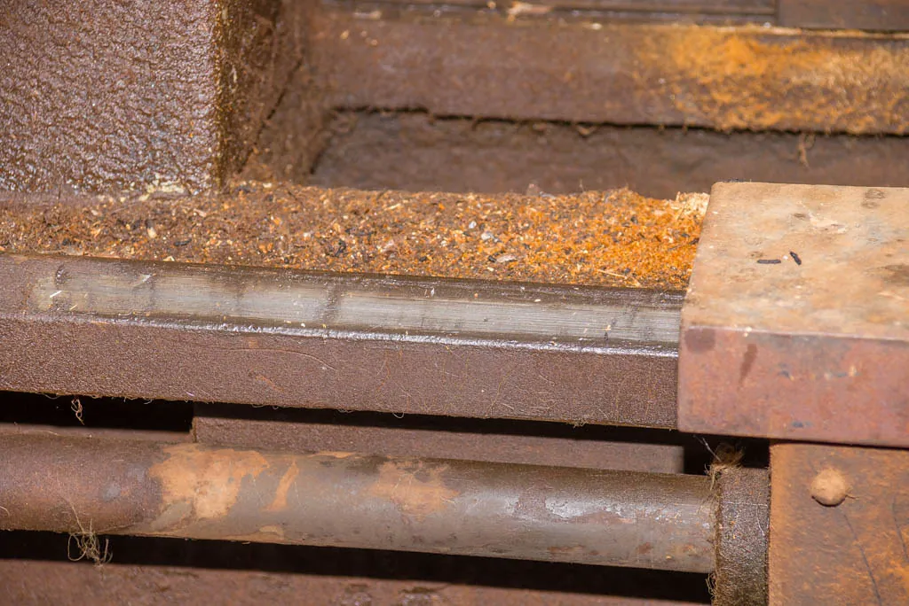

Restoration Planning
A restoration is won or lost in the planning. Here is how to assess a project honestly, document it properly, budget realistically, source parts responsibly, and work in a sensible order.

The Torque Ledger is an independent educational website and is not affiliated with, endorsed by, or sponsored by any company mentioned.
Plan before you buy
The most important work of any restoration happens before you own the car, on paper. A clear, honest plan is what separates finished, enjoyed restorations from the sad projects that languish for years under a tarp. Decide first what you truly want: a concours show car, a dependable weekend driver, or a gentle refresh of a sound survivor. These are wildly different projects in time, skill, and cost, and being honest at the outset saves immense frustration.
Assessing rust — the real enemy
Mechanical parts can almost always be repaired or replaced; serious rust is the project-killer. When evaluating any car, look past the shiny paint and running engine and hunt for corrosion, which is both the most expensive problem to fix and the most often hidden.
- Inspect the lower body panels, rocker panels, floors, trunk floor, and any seams or pockets where water collects.
- Check the frame or unibody structure underneath; structural rust here is a major, costly repair.
- Bring a flashlight and look inside doors and behind trim where rust hides.
- Be wary of thick filler or fresh undercoating, which can disguise rot — gentle, informed inspection or a specialist's eye helps.
- Remember: surface rust is manageable; structural rust changes the whole economics of a project.
Tip: A sound, rust-free car that needs mechanical and cosmetic work is almost always a better buy than a cheap, rusty one that runs. Rust repair is skilled, slow, and expensive; buy the best body you can afford.
Documenting the car
Before you take anything apart, document the car thoroughly. This single habit will save you countless hours and headaches, and it adds real value to the finished restoration.
- Photograph the car extensively from every angle, inside and out, before and during disassembly.
- Label every part and bag the fasteners as you remove them, noting where they came from.
- Keep a written log of what you do, in what order, and anything you discover along the way.
- Record the car's identifying numbers and research its history and original specification.
Months later, when you are trying to remember how a trim piece fitted or which bolt went where, this record is worth its weight in gold. It also tells the car's story, which is part of what makes a restored classic so treasured.
Budget and time, honestly
Restorations almost always cost more and take longer than first imagined — ask anyone who has finished one. Estimate generously, then add a margin. The purchase price is often the smallest part; parts, materials, and especially professional bodywork and paint add up quickly, and time is a real cost too. A full restoration can occupy years of weekends, so be honest about the space, money, and patience you can commit before you start.
Sourcing parts responsibly
Half the adventure of a restoration is the hunt for parts, and the classic-car world is well served. Reproduction parts for popular models, specialist suppliers, club spares, swap meets, and enthusiast forums can turn up almost anything with patience. Research parts availability before you buy a particular model; a rare car with unobtainable parts is a hard road. Buy from reputable sources, keep your receipts, and build relationships with the specialists for your make — their knowledge is often worth more than the parts.
Safety first: Source only legal, safe parts, and never fit anything that compromises the car's safety or defeats its emissions equipment. The goal is a sound, roadworthy, legal classic, restored with integrity.
A sensible order of work
A restoration goes more smoothly in a logical sequence. Broadly, the body and structure come first — rust repair, metalwork, and paint — because almost everything else attaches to them, and you do not want to risk damaging finished mechanical or interior work while welding and grinding on the body. Mechanical restoration of the engine, transmission, brakes, and suspension follows, then the electrical system, and finally the interior and the fine details. Working in this order avoids damaging finished work and keeps the project moving. Within that, tackle one system at a time so the car does not become a scattered heap of unrelated jobs.
Keeping the project moving
The graveyard of restorations is full of projects that stalled, and the cause is almost never a single impossible problem — it is loss of momentum. The antidote is to keep the work moving, however slowly. Set small, achievable goals and finish them. Work on the car regularly, even if only for an hour, rather than waiting for a free weekend that never comes. Tackle one system at a time so you always have a sense of progress rather than a thousand half-done jobs.
It helps enormously to end each session by tidying up and noting what to do next, so you can begin again without having to remember where you were. Celebrate each finished sub-project — the rebuilt carburetor, the painted panel, the sorted wiring — as the real accomplishment it is. A restoration completed is simply a long series of small jobs finished one after another, and the owners who enjoy each one are the owners who reach the end.
Realistic expectations
Perhaps the kindest advice for any restorer is to keep expectations realistic. The gleaming, flawless builds in magazines are usually the work of full-time professionals with large budgets and decades of experience. Your home restoration need not match them to be a triumph; a sound, safe, honest car that you brought back to life yourself is something to be deeply proud of, imperfections and all.
Allow for the project to take longer and cost more than planned — it almost always does — and do not measure your progress against anyone else's. This is your hobby, on your terms, within your means and time. Judged that way, every hour is a success and the finished car is a genuine achievement, no matter how it would fare against a professional build under a show-field spotlight. The happiest restorers are those who made peace with the long road early and chose to enjoy the journey.
Storing a car mid-restoration
A restoration often means a car sits partly dismantled for long stretches, and how you store it matters. Keep the car and its parts dry and protected, as exposed metal rusts quickly once the paint is disturbed. Store removed parts in a dry, organized way — labeled, bagged, and shelved — so nothing is lost or damaged, and so reassembly is not a treasure hunt. Protect a bare or primed body especially carefully from moisture.
Safety first: If the car is up on stands for an extended period, ensure the stands are rated for the weight, placed on a solid floor at proper lifting points, and the car is stable. A car that will sit for months should be supported securely and checked periodically, never left teetering on a jack. Where possible, store a long-term project on its wheels or on sturdy dollies rather than high in the air, both for safety and for ease of moving it.
When to call in a professional
Doing the work yourself is the heart of the hobby for many, but not every job is a do-it-yourself job. High-quality paint and bodywork need skill, equipment, and a proper booth. Brakes and anything safety-critical should be done or checked by a qualified mechanic. Machine work on an engine, upholstery, and chrome plating are specialist trades. The wise restorer does the jobs they can do well, enjoys them, and gladly pays an expert for the rest — the result is a safer, better car and a far happier journey.
The reward at the end of the road
It is worth holding the destination in mind through the long middle of a project, on the evenings when progress seems slow. There is no feeling in the hobby quite like the first drive in a car you brought back from the brink. After months or years of patient work, the engine catches, the car rolls out into the light, and every scraped knuckle and puzzling setback suddenly seems worth it. You will have created something lasting, and done it with your own hands.
But do not save all your satisfaction for that final day. The truth most veteran restorers come to know is that the journey was the real reward all along — the quiet hours in the shop, the problems solved, the skills gained, the friends met along the way. A restoration is a hobby, not a race, and the happiest restorers are those who savored every stage of it. Keep good records, take photographs throughout, and one day show the car with pride, telling the long and satisfying story of how it came to be. That story is part of what you built, and it will travel with the car for as long as it survives. Keep your finished or in-progress car healthy with the Maintenance section, and equip your shop from the Parts & Tools guide.